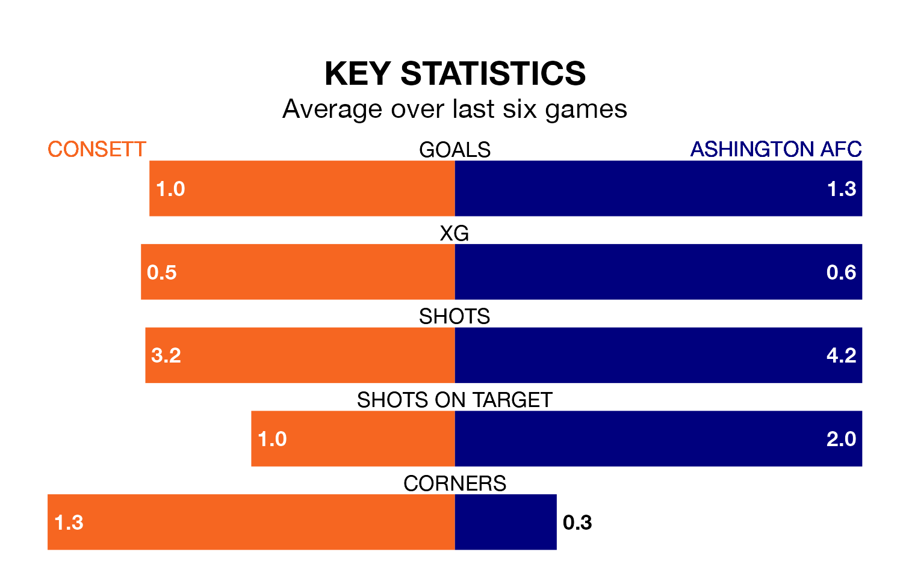

Consett are on a poor run ahead of hosting Ashington AFC on Saturday, with just four points collected from their last six games.
Consett have picked up one win and one draw in their last six Northern Premier League Division One – East games, and face an Ashington side whose last six games have brought one win and two draws.
With 43 goals in 25 games so far this season, Consett are scoring more than average in the league with 1.7 goals per game. And they are conceding fewer than average, letting in 34 goals at a rate of 1.4 per game.
Ashington are also above average scorers, with 1.7 goals per game, compared to a league average of 1.5. They have conceded 1.8 goals per game.
The home team are seventh in the table after 25 games, of which they have won 13 and drawn three, earning 42 points.
The visitors are five places behind Consett in 12th, with 10 wins and five draws putting them on 35 points.
In the last three years, Consett and Ashington have played each other on three occasions. Consett won one of them and they drew the other.
Their last meeting was on August 28, when Consett won 2-0 away.
Consett's last match was on February 27, a 1-1 draw against Newton Aycliffe.
Ashington drew 3-3 with Pontefract Collieries last time out, on Tuesday.
Updated: 09:34 (UTC), 08/03/24